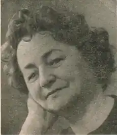

Балясна Рива Наумівна
(8.03.1910-1980)
Рива Наумівна Балясна народилася 8 березня 1910 року в містечку Радомишлі Житомирської області в родині бідняка. Рано залишилась без батьків, виховувалась у дитячому будинку. З 15 років почала працювати спочатку у школі ФЗН, а згодом на першій взуттєвій фабриці Києва. Пізніше вона закінчила відділ профосвіти Київського інституту народної освіти і аспірантуру, де здобула спеціальність учителя єврейської мови та літератури. У1934 році вийшла перша книжка віршів "Переклик". З того часу вірші та проза неодноразово почали виходити єврейською мовою, а також в перекладах українською та російською мовами. Під час Вітчизняної війни перебувала в евакуації, активно виступала в періодичній пресі та на радіо. Нагороджена медаллю "За доблесну працю у Великій Вітчизняній війні 1941-1945 рр.". Доля Риви Наумівни увібрала в себе трагедію цілого народу: вона одна з кращих представників творчої інтелігенції, була репресована в 1952 році, а в 1956 році справу її припинено за відсутністю складу злочину. На тлі страшної життєвої трагедії її поезії напрочуд ніжні, сповнені жіночності й любові. Чи не тому серед перекладачів цих творів – ціла плеяда майстрів письменства: Максим Рильський, Володимир Сосюра, Іван Драч, Дмитро Павличко, Наум Тихий, Юнна Мориц та ін. Окремими виданнями вийшли збірки віршів та поем "Світлі доріжки" (1940), "Дівчинка з Іванкова" (1947), "Юнь моя" (1961), "Четверть віку" (1973) та інші. Померла Рива Наумівна Балясна 1980 році у Києві.